1028H10 connecting rod and piston set - r r
- Path
- Procedures > 10 ENGINE > 1028 PISTONS AND CONNECTING RODS > 1028H pistons and connecting rods > 1028H10 connecting rod and piston set - r r
- Kind
- repair procedure (removal / refitting; the operation number is the code)
- Applies to
- all engines; all production periods
- Interactive page
- https://sloeber94.github.io/elrnDB-lYpsln/en/#/2428879
Applies to: engines: 1.2 8v; all production periods
1028H20 piston with connecting rod - r r remember to work on all pistons with connecting rods.
Applies to: engines: 1.2 16v; all production periods
1028H20 piston with connecting rod - r r remember to work on all pistons with connecting rods.
Applies to: engines: 1.4 16v; all production periods
1028H20 piston with connecting rod - r r remember to work on all pistons with connecting rods.
Applies to: engines: 1.3 JTD; all production periods
 Removing
Removing
 Refitting
RefittingPosition the vehicle on the ramp.
Drain the air conditioner coolant circuit 0010T84 coolant for air conditioning system dehydrate and recharge .
Proceed with removal 4450B04 right front wheel r r .
Proceed with removal .
Proceed with removal 7055B66 Engine compartment DUST SHIELD protection in right front wheel arch - R.R. .
Proceed with removal 7055B91 Right front WHEEL ARCH LINER - R.R. .
Proceed with removal 5530B10 battery - r+r .
Proceed with removal 5530B52 Battery DRIP TRAY/SUPPORT - R.R. .
Proceed with removal 1060G90 diesel injection wiring harness - r r .
Proceed with removal 1016B10 single cylinder head extension - change gasket .
Proceed with removal 1016C10 cylinder head - r + r and replace gasket .
1. Undo the bolts securing the bracket between the manual gearbox/engine to the gearbox.
2. Undo the bolts securing the bracket between the manual gearbox/engine to the gearbox.
3. Remove the bracket between the manual gearbox/engine.
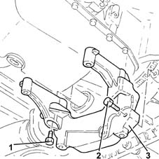
Applies to: engines: 1.3 JTD; all production periods
1. Undo the drain plug on the engine sump and drain the oil fully into a suitable container.
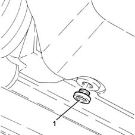
Applies to: engines: 1.3 JTD; all production periods
1. Undo nuts (1a) and bolts (1b) securing the oil sump to the crankcase.
2. Use the tool to cut the crankcase sump sealant.
 | Name | Country |
|---|---|---|
2 | Blade | 1.870.718.000 |
3. Remove the crankcase sump.
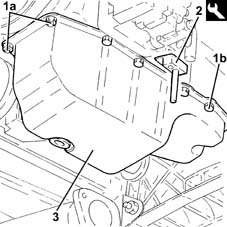
Applies to: engines: 1.3 JTD; all production periods
1. Undo the bolts (1a) and remove the crankcase oil sump partition (1b).
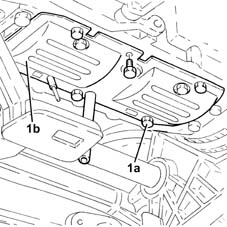
Applies to: engines: 1.3 JTD; all production periods
Remove the pin previously fitted from the hole in the gearbox.
1. Adjust the bolt securing the pulley mount flange to the crankshaf to rotate the crankshaft until the pistons for cylinders 1 and 4 are at B.D.C.
2. Undo bolts (2a) and remove big end bearing caps (2b) complete with bearing shells (2c) for cylinders 1 and 4.
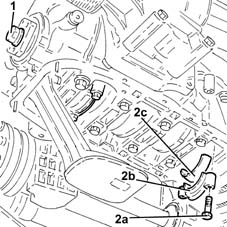
Applies to: engines: 1.3 JTD; all production periods
1. Release and remove the piston-connecting rod assemblies (1a), complete with half-bearings (1b) for cylinders 1 and 4.
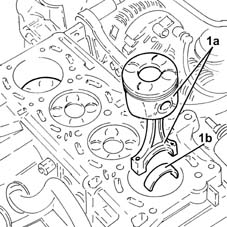
Applies to: engines: 1.3 JTD; all production periods
Follow the same procedure to remove the piston-connecting rod assemblies for the 2nd and 3rd cylinders.
Applies to: engines: 1.3 JTD; all production periods
Refitting
RemovingClean any sealant residues from the matching surfaces between the lower engine crankcase and the crankcase sump.
Fit the piston-connecting rod assemblies in accodance with the following references.
1. Piston category (1a) and arrow (1b) indicating timing side.
2. Area where number of cylinder bore/liner to which the connecting rod belongs is stamped.
3. Drain (3b) on the piston skirt must be aligned with oil spray (3b).
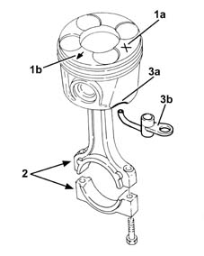
Applies to: engines: 1.3 JTD; all production periods
1. Place the piston-connecting rod assemblies for the 2nd and 3rd cylinders, complete with half-bearings back in their housings using a suitable fitting tool.
upper big end bearing shells, dark coloured three metal connecting rod side;
lower big end bearing shells, light coloured two metal cap side with an opening.
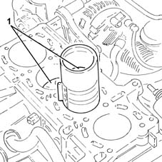
Applies to: engines: 1.3 JTD; all production periods
1. Fit the cylinder 2 and 3 connecting rod caps (1a), complete with half-bearings (1b), and secure by tightening the bolts (1c) to the recommended torque.
upper big end bearing shells, dark coloured three metal connecting rod side;
lower big end bearing shells, light coloured two metal cap side with an opening.
 | Fastening | Component | Ø | Value (daNm) |
|---|---|---|---|---|
1c | Bolt | BIG END BEARING CAPS | M8 | 1.9 ÷ 2.1 + 40? ± 2? |
Use the tool for angular tightening of the connecting rod cap bolts.
| Name | Country |
|---|---|---|
- | Protractor | 1.860.942.000 |
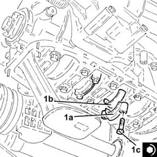
Applies to: engines: 1.3 JTD; all production periods
Follow the same procedure when fitting the piston-connecting rod assemblies for the 1st and 4th cylinders.
Fit a suitable pin through the hole in the gearbox.
Place the crankcase oil sump partition back in its housing and secure it using the bolts.
1. Apply a bead of recommended silicon sealant to the contact surfaces of the crankcase sump and the lower engine crankcase as illustrated in the diagram below.
 | Type | Component | Name | Qty. |
|---|---|---|---|---|
1 | Sealant | OIL SUMP | LOCTITE 5900 | - |
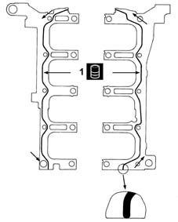
Applies to: engines: 1.3 JTD; all production periods
1. Place the crankcase sump (1a) back in its housing and secure it by tightening the bolts (1b) and the nuts (1c) to the recommended torque.
| Fastening | Component | Ø | Value (daNm) |
|---|---|---|---|---|
1b | Bolt | OIL SUMP | M6 | (Lower engine crankcase side) 0.8 ÷ 1.0 |
| Fastening | Component | Ø | Value (daNm) |
|---|---|---|---|---|
1c | Nut | OIL SUMP | M6 | (Timing cover side) 0.8 ÷ 1.0 |
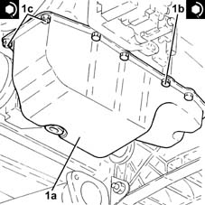
Applies to: engines: 1.3 JTD; all production periods
1. Tighten the crankcase sump drain plug to the recommended torque.
| Fastening | Component | Ø | Value (daNm) |
|---|---|---|---|---|
1 | - | ENGINE OIL DRAIN PLUG | M14 | (Crankcase sump side) 1.8 ÷ 2.2 |
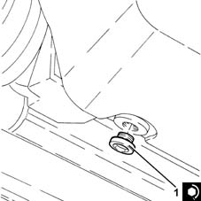
Applies to: engines: 1.3 JTD; all production periods
1. Refit the bracket between the manual gearbox/engine (1a) in its seating, then secure it with the bolts (1b) and (1c) to the specified torque.
| Fastening | Component | Ø | Value (daNm) |
|---|---|---|---|---|
1b | Bolt | GEARBOX/ENGINE COUPLING BRACKET | M8 | (Gearbox side) 2.3 ÷ 2.8 |
| Fastening | Component | Ø | Value (daNm) |
|---|---|---|---|---|
1c | Bolt | GEARBOX/ENGINE COUPLING BRACKET | M8 | (Engine crankcase side) 2.7 ÷ 3.3 |
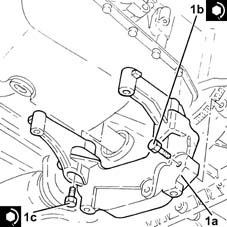
Applies to: engines: 1.3 JTD; all production periods
Proceed with refitting 1016C10 cylinder head - r + r and replace gasket .
Proceed with refitting 1016B10 single cylinder head extension - change gasket .
Proceed with refitting 1060G90 diesel injection wiring harness - r r .
Proceed with refitting 5530B52 Battery DRIP TRAY/SUPPORT - R.R. .
Proceed with refitting 5530B10 battery - r+r .
Refill the engine oil lubrication system 0010T11 engine oil check level and top up .
Refill the engine cooling system with coolant 0010T20 coolant change .
Proceed with refitting 7055B91 Right front WHEEL ARCH LINER - R.R. .
Proceed with refitting 7055B66 Engine compartment DUST SHIELD protection in right front wheel arch - R.R. .
Proceed with refitting .
Proceed with refitting 4450B04 right front wheel r r .
Fill the air conditioner coolant circuit 0010T84 coolant for air conditioning system dehydrate and recharge .
Remove the car from the ramps.
Topics linked from this page (12)
- 0010T11 engine oil check level and top up
- 0010T20 coolant change
- 0010T84 coolant for air conditioning system dehydrate and recharge
- 1016B10 single cylinder head extension - change gasket
- 1016C10 cylinder head - r + r and replace gasket
- 1028H20 piston with connecting rod - r r
- 1060G90 diesel injection wiring harness - r r
- 4450B04 right front wheel r r
- 5530B10 battery - r+r
- 5530B52 Battery DRIP TRAY/SUPPORT - R.R.
- 7055B66 Engine compartment DUST SHIELD protection in right front wheel arch - R.R.
- 7055B91 Right front WHEEL ARCH LINER - R.R.